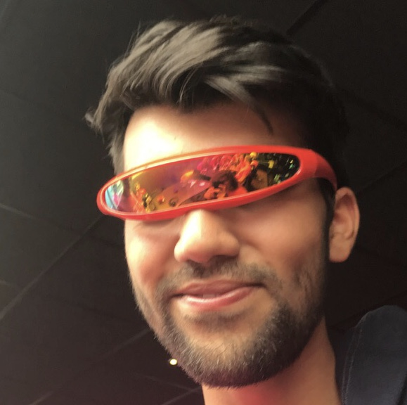

Raj Ramcharan
Mijn naam is Raj Ramcharan. Ik ben fanatiek gamer sinds mijn tiende en heb altijd al gehouden van retro games. Ik speelde ze altijd toen ik klein was
en daardoor is mijn passie ervoor altijd groter geworden. Mijn grote vriend David was ook altijd fan van retro games.
Toen kwam het geweldige idee naar boven
om samen een webshop te beginnen voor retro games. En toen werd BRICKED! geboren!